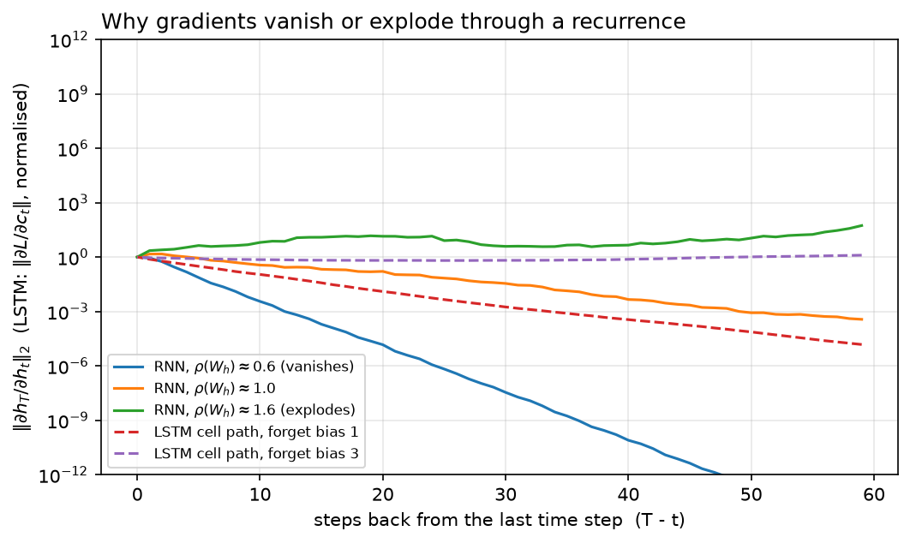

RNN, LSTM, GRU¶
Why this matters at staff level. Nobody will ask you to build a production LSTM in 2026, but they will ask why the field left recurrence, and that question is a proxy for whether you understand gradient flow and hardware utilisation. In ML-depth rounds "derive backpropagation through time and explain vanishing gradients" and "why can't an RNN be parallelised across time, and can a Transformer?" are standard. Strong signal is the product of Jacobians written out, the LSTM cell path explained as an additive highway, and the sequential-dependency argument made in terms of kernel launches and arithmetic intensity rather than vague appeals to speed. On-device streaming ASR and low-power keyword spotting still ship recurrent models, so literacy here is also a production fact, not nostalgia.
TL;DR: the interview card¶
- Vanilla RNN: \(h_t = \tanh(x_t W_x + h_{t-1} W_h + b)\), one hidden state carried forward, parameters shared across time. That sharing is what makes it a sequence model and also what makes its gradients pathological.
- BPTT gradient through \(k\) steps is a product of \(k\) Jacobians \(\prod \diag(1 - h_s^2)W_h^\top\); its norm behaves like \(\sigma^k\) where \(\sigma\) relates to the largest singular value of \(W_h\). \(\sigma < 1\) → vanishing, \(\sigma > 1\) → exploding.
- Exploding is the easy one: clip the global gradient norm (\(g \leftarrow g\cdot c/\lVert g\rVert\) when \(\lVert g\rVert > c\)). Vanishing is architectural: you cannot clip your way out of it.
- LSTM adds a cell state with an additive update \(c_t = f_t\odot c_{t-1} + i_t\odot g_t\), so \(\partial c_t/\partial c_{t-1} = \diag(f_t)\), a gate-controlled identity path, the constant error carousel. With \(f_t\approx 1\) error flows hundreds of steps unattenuated.
- Gates: forget \(f\), input \(i\), output \(o\) (all sigmoid), candidate \(g\) (tanh); \(h_t = o_t \odot \tanh(c_t)\). Initialise the forget bias to 1 so the carousel starts open.
- GRU merges cell and hidden state and uses two gates (\(r\), \(z\)) with \(h_t = (1-z_t)\odot n_t + z_t\odot h_{t-1}\); ~25% fewer parameters, usually within noise of LSTM quality, cheaper per step.
- Bidirectional = two independent passes concatenated; strictly an encoder tool, never usable for streaming or causal generation.
- The fatal flaw is not accuracy, it is \(O(T)\) sequential steps: step \(t\) cannot start until \(t-1\) finishes, so a GPU runs \(T\) tiny, memory-bound kernels. A Transformer layer does the same job in one big batched matmul: same FLOPs, an order of magnitude more throughput. That is the motivation for attention mathematics.
- Still shipping in production: streaming ASR (RNN-T on-device), tiny always-on models, and systems where per-step state must be \(O(1)\) in memory rather than growing like a KV cache.
1. Intuition first¶
A feedforward network maps a fixed-size input to an output. A sequence has no fixed size, and its elements are not exchangeable: "dog bites man" and "man bites dog" contain the same tokens. The recurrent answer is a loop with memory. Keep a state vector \(h\), and at every time step fold in the next input:
The same \(f\) (the same weights) is applied at every step. That weight sharing is what lets one model handle length 5 and length 500, and it is the exact analogue of weight sharing across space in a convolution.
Make it concrete. Take \(d_{in}=2\), \(d_h=2\), a 3-step sequence, and
with inputs \(x_1 = (1, 0)\), \(x_2 = (0, 1)\), \(x_3 = (0, 0)\). Then
Look at what happened to \(x_1\)'s contribution: it entered at \(0.762\), was multiplied by \(0.5\) and squashed to \(0.363\), then to \(0.180\). Each step multiplies by \(W_h\) and passes through a saturating nonlinearity whose derivative is at most 1. After 20 steps, \(x_1\)'s influence is \(\approx 0.5^{20}\approx 10^{-6}\). The forward signal decays, and, as §2 shows, the gradient decays by the same mechanism, which is the real problem: the model cannot learn a dependency it cannot feel.
The figure below is the entire chapter in one picture. Three RNNs with \(W_h\) rescaled to spectral radius \(0.6\), \(1.0\) and \(1.6\), and two LSTM cell paths with different forget biases:

Look at the vertical axis: it is logarithmic and spans 24 decades. The \(\rho = 0.6\) RNN's gradient is \(10^{-12}\) after 60 steps, numerically zero in fp32. The \(\rho = 1.6\) RNN's is \(10^{11}\). One such minibatch destroys the weights. Only the \(\rho\approx 1\) knife-edge is usable, and it is not stable under training. The dashed LSTM curves stay flat because the cell path multiplies by \(f_t \in (0,1)\) chosen by the network rather than by a fixed \(W_h\).
2. The math¶
2.1 Forward pass¶
With row-major data (\(x_t \in \R^{1\times d_{in}}\), so a linear map is \(xW\)):
Shapes: \(W_x \in \R^{d_{in}\times d_h}\), \(W_h \in \R^{d_h\times d_h}\), \(b\in\R^{d_h}\), \(W_y\in\R^{d_h\times d_{out}}\). The loss is typically \(L = \sum_t \ell(y_t, \text{target}_t)\).
2.2 Backpropagation through time¶
Unroll the loop into a feedforward network \(T\) layers deep that happens to share weights, and apply the chain rule. Write \(\delta_t = \partial L/\partial h_t\), the total gradient arriving at \(h_t\), which has two sources: the local read-out \(y_t\), and the future through \(h_{t+1}\):
The recurrence Jacobian is the object that matters. From \(h_{t+1} = \tanh(x_{t+1}W_x + h_t W_h + b)\),
(the \(\tanh' = 1 - \tanh^2\) factor, then the linear map). Because weights are shared, the parameter gradients accumulate over all time steps:
where \(\alpha_t = \delta_t \odot (1 - h_t^2)\) is the gradient at the pre-activation \(a_t\). This is the single most common derivation slip: forgetting that \(W_h\) receives a contribution from every step, not just the last.
2.3 Why gradients vanish or explode¶
Iterate the Jacobian. The gradient that reaches \(h_t\) from a loss at step \(T\) is
a product of \(T - t\) matrices. Take norms, using submultiplicativity:
where \(\gamma = \max_s \lVert \diag(1-h_s^2)\rVert \le 1\) because \(\tanh'\in(0,1]\). So:
- If \(\sigma_{\max}(W_h) < 1/\gamma\), the bound is a geometric decay: vanishing gradients. The loss at step \(T\) carries essentially no information about \(h_t\) for \(T - t \gtrsim 20\), so long-range dependencies are unlearnable, not learned slowly, but invisible, drowned by the short-range terms in the same sum.
- If the smallest singular value satisfies \(\sigma_{\min}(W_h)\gamma > 1\), the product grows geometrically: exploding gradients. A single long sequence produces an enormous update that throws the weights off the manifold.
Two things to note, because interviewers probe both. First, \(\tanh\) helps with explosion and hurts with vanishing: its derivative is \(\le 1\) everywhere, and once units saturate (\(|a_t|\) large) the derivative is near zero, which shuts the path down entirely. Second, vanishing and exploding can coexist, different directions in the state space, corresponding to different singular values, can decay and grow simultaneously in the same model.
The one-line version for an interview
"The gradient through \(k\) steps is a product of \(k\) Jacobians, so its magnitude is exponential in \(k\): anything but a spectral radius of exactly one either dies or blows up. Clipping fixes the blow-up; only an architectural identity path fixes the death."
2.4 Gradient clipping and truncated BPTT¶
Clipping (Pascanu et al., 2013) rescales the global gradient, the concatenation of all parameter gradients, when its norm exceeds a threshold \(c\):
Rescaling the global vector preserves the direction of the update, which per-parameter clipping does not; that is why global-norm clipping is the standard and why it is still used in every LLM training run today (Part VI) even though nobody trains RNNs. Typical \(c\): 1.0 for Transformers, 5–10 for RNNs.
Truncated BPTT bounds compute and memory rather than gradient magnitude. Process the sequence in chunks of \(k\) steps; carry \(h\) forward across chunk boundaries but detach it, so the backward pass never crosses a boundary. Cost drops from \(O(T)\) activations to \(O(k)\); the price is that dependencies longer than \(k\) receive no gradient at all. Choosing \(k\) is choosing the longest dependency you are willing to learn.
2.5 LSTM: the constant error carousel¶
The LSTM (Hochreiter & Schmidhuber, 1997) adds a second state vector, the cell \(c_t\), whose update is additive rather than multiplicative-through-a-nonlinearity:
All four gates read the same \((x_t, h_{t-1})\) and each has its own \((W_x, W_h, b)\): eight matrices and four bias vectors, so an LSTM layer has \(4(d_{in}d_h + d_h^2 + d_h)\) parameters, four times a vanilla RNN's.
Now differentiate the cell path, holding the gates fixed (they depend on \(h_{t-1}\), so this is the direct path, which is the one that carries long-range signal):
This is the whole idea. The Jacobian along the cell path is a diagonal matrix of gate values, not a learned weight matrix passed through a saturating nonlinearity. Over \(k\) steps it is \(\prod \diag(f_s)\), still a product, but of numbers the network chooses per unit and per step. If a unit needs to remember something for 200 steps, the network can set \(f \approx 1\) for that unit and the gradient arrives undamped. If it needs to forget, it sets \(f\approx 0\) and the path closes deliberately. Contrast with the vanilla RNN, where the decay rate is a fixed property of \(W_h\), shared by every unit and every step and every piece of content.
This also explains the standard trick of initialising \(b_f = 1\): \(\sigma(1)\approx 0.73\), so the carousel starts mostly open and gradient reaches back far enough for the model to discover long-range structure before the gates specialise. Initialising \(b_f = 0\) gives \(f\approx 0.5\) and a half-life of one step, and many reported "LSTMs don't work on this task" results are this bug.
The full backward pass is in §3; the term to remember is that \(dc_{t-1}\) receives \(dc_t \odot f_t\) from the carousel plus the contributions routed through the gates.
2.6 GRU: the same idea with two gates¶
There is no separate cell; \(h\) plays both roles, and the forget and input gates are tied into one (\(z\) and \(1-z\)). The identity path survives: \(\partial h_t/\partial h_{t-1} \supseteq \diag(z_t)\), the same carousel with one fewer degree of freedom. Three gate projections instead of four means \(3(d_{in}d_h + d_h^2)\) weights, about 25% fewer than an LSTM. Empirically the two are close on most tasks; the GRU wins on small data and tight latency budgets, the LSTM on tasks needing precise long-term storage separate from the exposed state.
Where the reset gate sits
PyTorch applies \(r_t\) after the hidden projection: \(r_t \odot (h_{t-1}W_{hn} + b_{hn})\), not
\((r_t\odot h_{t-1})W_{hn}\). The two differ, and matching PyTorch matters when you check your
implementation against nn.GRU, our test does exactly that.
2.7 Bidirectionality¶
Run one recurrence left-to-right and an independent one right-to-left, then concatenate: \(h_t = [\overrightarrow{h_t}; \overleftarrow{h_t}] \in \R^{2d_h}\). Each position now sees the whole sequence, which is why bidirectional LSTMs were the standard encoder before BERT and why BERT's "bidirectional" branding was aimed at exactly this comparison. The cost: you need the entire sequence before you can compute any output, so bidirectional models cannot stream and cannot generate autoregressively. This is precisely the encoder/decoder distinction that reappears in chapter 4.
2.8 The real reason recurrence lost¶
Not accuracy, parallelism. Both an RNN layer and a self-attention layer over \(T\) tokens do \(\Theta(T d^2)\) and \(\Theta(T^2 d)\) FLOPs respectively, and for \(T \lesssim d\) the RNN does fewer FLOPs. But an RNN's \(T\) steps are sequentially dependent: step \(t\) needs \(h_{t-1}\). On a GPU that means \(T\) separate small matmuls of shape \((B, d_h)\times(d_h, d_h)\), each launched after the previous completes. At \(B = 32\), \(d_h = 512\) such a matmul is a few microseconds of work with an arithmetic intensity around \(B\) (deeply memory-bound) plus kernel launch overhead, and the device sits mostly idle. A Transformer layer computes all \(T\) positions in one \((B T, d)\times(d, d)\) matmul: identical mathematics per position, one large compute-bound kernel. The consequence in practice is an order of magnitude in tokens/second at the same FLOP count, and that gap is what decided the architecture question. (See hardware, memory & roofline for the arithmetic intensity framing.)
The trade-off does not vanish, it moves. An RNN has \(O(1)\) state per step at inference; a Transformer has a KV cache that grows linearly with context (chapter 4, §4). That is exactly why recurrent and state-space models keep coming back for long-context and streaming settings (Part VI, chapter 3).
3. Implementation¶
3.1 Vanilla RNN, forward and full BPTT (NumPy)¶
def forward(self, X: np.ndarray, h0: np.ndarray | None = None) -> tuple[np.ndarray, np.ndarray, dict]:
"""Run the recurrence over one sequence.
Args:
X: (T, d_in) inputs, one time step per row.
h0: (d_h,) initial hidden state; zeros if None.
Returns:
Y: (T, d_out) read-outs y_t = h_t W_y + b_y.
H: (T, d_h) hidden states h_1..h_T.
cache: tensors needed by ``backward``.
"""
p = self.params
T = X.shape[0]
h_prev = np.zeros(self.d_h) if h0 is None else h0 # (d_h,)
H = np.zeros((T, self.d_h)) # (T, d_h)
H_prev = np.zeros((T, self.d_h)) # (T, d_h): h_{t-1} for each t
for t in range(T):
H_prev[t] = h_prev
a_t = X[t] @ p["W_x"] + h_prev @ p["W_h"] + p["b"] # (d_h,) pre-activation
h_prev = np.tanh(a_t) # (d_h,)
H[t] = h_prev
Y = H @ p["W_y"] + p["b_y"] # (T, d_h) @ (d_h, d_out) -> (T, d_out)
cache = {"X": X, "H": H, "H_prev": H_prev}
return Y, H, cache
Read the forward pass as bookkeeping for the backward pass: we store H_prev[t] (that is
\(h_{t-1}\)) because \(\partial L/\partial W_h\) needs \(h_{t-1}^\top \alpha_t\), and we store H because
the \(\tanh\) derivative is expressible in the output as \(1 - h_t^2\) (no need to keep \(a_t\)).
The backward pass:
def backward(self, dY: np.ndarray, cache: dict) -> dict[str, np.ndarray]:
"""Full BPTT given dL/dY.
Args:
dY: (T, d_out) upstream gradient of the loss w.r.t. each read-out y_t.
cache: from ``forward``.
Returns:
dict with the same keys/shapes as ``self.params``.
"""
p = self.params
X, H, H_prev = cache["X"], cache["H"], cache["H_prev"]
T = X.shape[0]
grads = {k: np.zeros_like(v) for k, v in p.items()}
grads["W_y"] = H.T @ dY # (d_h, T) @ (T, d_out) -> (d_h, d_out)
grads["b_y"] = dY.sum(axis=0) # (d_out,)
dH_from_y = dY @ p["W_y"].T # (T, d_out) @ (d_out, d_h) -> (T, d_h)
dh_next = np.zeros(self.d_h) # (d_h,) gradient flowing back from h_{t+1}
for t in reversed(range(T)):
dh_t = dH_from_y[t] + dh_next # (d_h,) total gradient into h_t
da_t = dh_t * (1.0 - H[t] ** 2) # (d_h,) through tanh
grads["W_x"] += np.outer(X[t], da_t) # (d_in, d_h)
grads["W_h"] += np.outer(H_prev[t], da_t) # (d_h, d_h)
grads["b"] += da_t # (d_h,)
dh_next = da_t @ p["W_h"].T # (d_h,) @ (d_h, d_h) -> (d_h,)
return grads
Three things to notice. dh_next carries \(\delta_{t+1}\partial h_{t+1}/\partial h_t\) and is
initialised to zero because nothing follows \(h_T\). The += on parameter gradients is the weight
sharing: every step contributes. And the last line, dh_next = da_t @ W_h.T, is the product of
Jacobians from §2.3 being formed one factor at a time, the vanishing-gradient mechanism, in code.
hidden_jacobian_norms makes that product explicit for the figure:
def hidden_jacobian_norms(self, cache: dict) -> np.ndarray:
"""Spectral norm of dh_T/dh_t for every t (the "product of Jacobians").
dh_T/dh_t = prod_{s=t+1}^{T} diag(1 - h_s^2) W_h^T (evaluated right to left)
Returns:
(T,) array; entry t is ||dh_T/dh_t||_2. Entry T-1 is 1 (identity).
"""
H = cache["H"]
T = H.shape[0]
norms = np.zeros(T)
J = np.eye(self.d_h) # (d_h, d_h) running product, starts as dh_T/dh_T
norms[T - 1] = 1.0
for t in reversed(range(T - 1)):
# one more step back: dh_{t+1}/dh_t = diag(1 - h_{t+1}^2) W_h^T
J = J @ (np.diag(1.0 - H[t + 1] ** 2) @ self.params["W_h"].T) # (d_h, d_h)
norms[t] = np.linalg.norm(J, ord=2)
return norms
and clipping is four lines:
def clip_grad_norm(grads: dict[str, np.ndarray], max_norm: float) -> tuple[dict[str, np.ndarray], float]:
"""Global-norm gradient clipping (Pascanu et al., 2013).
g <- g * max_norm / ||g|| if ||g|| > max_norm, where ||g|| is the norm of the
concatenation of all gradients.
Returns:
(clipped grads, the pre-clip global norm).
"""
total = float(np.sqrt(sum(float((g ** 2).sum()) for g in grads.values())))
if total <= max_norm or total == 0.0:
return grads, total
scale = max_norm / total
return {k: g * scale for k, g in grads.items()}, total
How you'd test it. Finite differences, always, for a hand-derived backward pass. Pick a random
upstream gradient \(R\) and define \(L = \sum_t \langle y_t, r_t\rangle\), whose derivative w.r.t. \(Y\) is
exactly \(R\); then check every parameter entry against
\((L(\theta + \epsilon e_i) - L(\theta - \epsilon e_i))/2\epsilon\) with \(\epsilon = 10^{-6}\) in float64.
That is test_vanilla_rnn_bptt_matches_finite_differences.
3.2 LSTM with every gate (NumPy)¶
def _gates(self, x_t: np.ndarray, h_prev: np.ndarray) -> tuple[np.ndarray, ...]:
"""Compute (f, i, o, g) for one step. x_t: (d_in,), h_prev: (d_h,)."""
p = self.params
f = sigmoid(x_t @ p["W_xf"] + h_prev @ p["W_hf"] + p["b_f"]) # (d_h,)
i = sigmoid(x_t @ p["W_xi"] + h_prev @ p["W_hi"] + p["b_i"]) # (d_h,)
o = sigmoid(x_t @ p["W_xo"] + h_prev @ p["W_ho"] + p["b_o"]) # (d_h,)
g = np.tanh(x_t @ p["W_xg"] + h_prev @ p["W_hg"] + p["b_g"]) # (d_h,)
return f, i, o, g
def forward(self, X: np.ndarray) -> tuple[np.ndarray, dict]:
"""Run the recurrence from zero state.
Args:
X: (T, d_in) inputs.
Returns:
H: (T, d_h) hidden states h_1..h_T.
cache: everything ``backward`` needs.
"""
T = X.shape[0]
d_h = self.d_h
F, I, O, G = (np.zeros((T, d_h)) for _ in range(4)) # each (T, d_h)
C, H = np.zeros((T, d_h)), np.zeros((T, d_h)) # (T, d_h)
C_prev, H_prev = np.zeros((T, d_h)), np.zeros((T, d_h)) # (T, d_h)
h_prev, c_prev = np.zeros(d_h), np.zeros(d_h) # (d_h,)
for t in range(T):
H_prev[t], C_prev[t] = h_prev, c_prev
f, i, o, g = self._gates(X[t], h_prev)
c_t = f * c_prev + i * g # (d_h,) additive cell update
h_t = o * np.tanh(c_t) # (d_h,)
F[t], I[t], O[t], G[t], C[t], H[t] = f, i, o, g, c_t, h_t
h_prev, c_prev = h_t, c_t
cache = {"X": X, "F": F, "I": I, "O": O, "G": G, "C": C, "H": H, "C_prev": C_prev, "H_prev": H_prev}
return H, cache
The gates are written out one line each on purpose: in an interview, writing
gates = x @ W + h @ U + b then slicing four chunks out of it is a red flag unless you can
immediately say which slice is which. Production code fuses them (one \((d, 4d)\) matmul is faster
than four \((d, d)\) ones); explanatory code does not.
The backward pass, which is the part people cannot reproduce under pressure:
def backward(self, dH: np.ndarray, cache: dict) -> dict[str, np.ndarray]:
"""Full BPTT given dL/dH.
Args:
dH: (T, d_h) upstream gradient w.r.t. every hidden state.
Returns:
dict of gradients with the same keys/shapes as ``self.params``.
"""
p = self.params
X, F, I, O, G, C = cache["X"], cache["F"], cache["I"], cache["O"], cache["G"], cache["C"]
C_prev, H_prev = cache["C_prev"], cache["H_prev"]
T = X.shape[0]
grads = {k: np.zeros_like(v) for k, v in p.items()}
dh_next = np.zeros(self.d_h) # (d_h,) from h_{t+1}
dc_next = np.zeros(self.d_h) # (d_h,) from c_{t+1}
for t in reversed(range(T)):
dh = dH[t] + dh_next # (d_h,) total gradient into h_t
tanh_c = np.tanh(C[t]) # (d_h,)
do = dh * tanh_c # (d_h,)
dc = dh * O[t] * (1.0 - tanh_c ** 2) + dc_next # (d_h,) carousel: dc_t gets dc_{t+1}*f_{t+1} via dc_next
df = dc * C_prev[t] # (d_h,)
di = dc * G[t] # (d_h,)
dg = dc * I[t] # (d_h,)
# through the gate nonlinearities -> pre-activation gradients
da = {
"f": df * F[t] * (1.0 - F[t]), # sigmoid'
"i": di * I[t] * (1.0 - I[t]),
"o": do * O[t] * (1.0 - O[t]),
"g": dg * (1.0 - G[t] ** 2), # tanh'
}
dh_next = np.zeros(self.d_h) # (d_h,)
for gate in self.GATES:
grads[f"W_x{gate}"] += np.outer(X[t], da[gate]) # (d_in, d_h)
grads[f"W_h{gate}"] += np.outer(H_prev[t], da[gate]) # (d_h, d_h)
grads[f"b_{gate}"] += da[gate] # (d_h,)
dh_next += da[gate] @ p[f"W_h{gate}"].T # (d_h,)
dc_next = dc * F[t] # (d_h,) the constant error carousel
return grads
Walk the two gradient paths into \(c_t\). The first, dh * O[t] * (1 - tanh_c**2), comes from
\(h_t = o_t\odot\tanh(c_t)\). The second, dc_next, is the carousel: it was set at the end of the
previous (later in time) iteration as dc * F[t], which is exactly \(\diag(f_{t+1})\) applied to
\(dc_{t+1}\). That one line is \(\partial c_{t+1}/\partial c_t = \diag(f_{t+1})\) from §2.5, and it is
the answer to "show me where the LSTM fixes vanishing gradients in the code".
Also note dh_next accumulating over all four gates: \(h_{t-1}\) feeds every gate, so the gradient
arriving at it is a sum of four terms. Dropping three of them is the classic bug, and finite
differences catch it instantly.
3.3 GRU (PyTorch)¶
Autograd earns its keep here; what is worth writing by hand is the cell, with the reset gate in PyTorch's position:
class GRUCell(nn.Module):
"""One GRU step. Six ``nn.Linear`` layers, one per (gate, source) pair."""
def __init__(self, d_in: int, d_h: int) -> None:
super().__init__()
self.d_in, self.d_h = d_in, d_h
self.x_r = nn.Linear(d_in, d_h) # W_xr, b_r(x part)
self.h_r = nn.Linear(d_h, d_h) # W_hr
self.x_z = nn.Linear(d_in, d_h) # W_xz
self.h_z = nn.Linear(d_h, d_h) # W_hz
self.x_n = nn.Linear(d_in, d_h) # W_xn, b_xn
self.h_n = nn.Linear(d_h, d_h) # W_hn, b_hn
def forward(self, x_t: torch.Tensor, h_prev: torch.Tensor) -> torch.Tensor:
"""x_t: (B, d_in), h_prev: (B, d_h) -> h_t: (B, d_h)."""
r = torch.sigmoid(self.x_r(x_t) + self.h_r(h_prev)) # (B, d_h)
z = torch.sigmoid(self.x_z(x_t) + self.h_z(h_prev)) # (B, d_h)
n = torch.tanh(self.x_n(x_t) + r * self.h_n(h_prev)) # (B, d_h)
h_t = (1.0 - z) * n + z * h_prev # (B, d_h)
return h_t
and the sequential loop that is the whole argument of §2.8:
class GRU(nn.Module):
"""Batch-first single-layer GRU built from ``GRUCell``.
Input (B, T, d_in) -> outputs (B, T, d_h) and final state (B, d_h).
"""
def __init__(self, d_in: int, d_h: int) -> None:
super().__init__()
self.cell = GRUCell(d_in, d_h)
self.d_h = d_h
def forward(self, x: torch.Tensor, h0: torch.Tensor | None = None) -> tuple[torch.Tensor, torch.Tensor]:
"""Sequential loop over T -- this loop is the reason RNNs do not parallelise across time."""
B, T, _ = x.shape
h = x.new_zeros(B, self.d_h) if h0 is None else h0 # (B, d_h)
outputs = []
for t in range(T):
h = self.cell(x[:, t, :], h) # (B, d_h); depends on h from step t-1
outputs.append(h)
H = torch.stack(outputs, dim=1) # (B, T, d_h)
return H, h
for t in range(T) with h fed forward is not an implementation detail we could optimise away,
it is the data dependency. Bidirectionality is then two of these plus a flip:
class BidirectionalGRU(nn.Module):
"""Two independent GRUs read the sequence forwards and backwards; outputs are concatenated.
Input (B, T, d_in) -> (B, T, 2*d_h). Requires the whole sequence up front, so it is
an encoder-side tool only (never usable for streaming/causal decoding).
"""
def __init__(self, d_in: int, d_h: int) -> None:
super().__init__()
self.fwd = GRU(d_in, d_h)
self.bwd = GRU(d_in, d_h)
def forward(self, x: torch.Tensor) -> torch.Tensor:
H_f, _ = self.fwd(x) # (B, T, d_h) left-to-right
H_b, _ = self.bwd(torch.flip(x, dims=[1])) # (B, T, d_h) computed on the reversed sequence
H_b = torch.flip(H_b, dims=[1]) # (B, T, d_h) re-aligned so row t is "the future of t"
return torch.cat([H_f, H_b], dim=-1) # (B, T, 2*d_h)
The double torch.flip is where people get confused: the backward GRU reads the reversed
sequence, so its output at index \(i\) corresponds to original position \(T-1-i\); flipping the output
back re-aligns it so that row \(t\) of the concatenation means "summary of the past at \(t\)" next to
"summary of the future at \(t\)".
How you'd test it. Copy weights into torch.nn.GRU and compare outputs elementwise
(test_gru_sequence_matches_torch_gru), and verify the direction semantics by perturbing
x[:, 0] and checking the backward half of the last position is unchanged.
Full implementations
"""Vanilla (Elman) RNN in NumPy with forward pass and full backpropagation through time.
Equations (row-major, one sequence of length T, no batch dimension):
h_t = tanh(x_t W_x + h_{t-1} W_h + b) h_t in R^{d_h}
y_t = h_t W_y + b_y y_t in R^{d_out}
BPTT: with a_t = x_t W_x + h_{t-1} W_h + b and an upstream gradient dh_t
(which sums the gradient coming from y_t and the one flowing back from h_{t+1}),
da_t = dh_t * (1 - h_t^2) (tanh')
dW_x += x_t^T da_t, dW_h += h_{t-1}^T da_t, db += da_t
dh_{t-1} (from the recurrence) = da_t W_h^T
so the gradient reaching h_0 from h_T is a product of T Jacobians
diag(1 - h_t^2) W_h^T, whose norm shrinks or grows geometrically: the vanishing /
exploding gradient problem.
"""
from __future__ import annotations
import numpy as np
class VanillaRNN:
"""Single-layer tanh RNN with a linear read-out.
Parameters are stored in ``self.params`` with shapes
W_x: (d_in, d_h) W_h: (d_h, d_h) b: (d_h,)
W_y: (d_h, d_out) b_y: (d_out,)
"""
def __init__(self, d_in: int, d_h: int, d_out: int, seed: int = 0) -> None:
rng = np.random.default_rng(seed)
self.d_in, self.d_h, self.d_out = d_in, d_h, d_out
self.params: dict[str, np.ndarray] = {
"W_x": rng.normal(0.0, 1.0 / np.sqrt(d_in), size=(d_in, d_h)), # (d_in, d_h)
"W_h": rng.normal(0.0, 1.0 / np.sqrt(d_h), size=(d_h, d_h)), # (d_h, d_h)
"b": np.zeros(d_h), # (d_h,)
"W_y": rng.normal(0.0, 1.0 / np.sqrt(d_h), size=(d_h, d_out)), # (d_h, d_out)
"b_y": np.zeros(d_out), # (d_out,)
}
def forward(self, X: np.ndarray, h0: np.ndarray | None = None) -> tuple[np.ndarray, np.ndarray, dict]:
"""Run the recurrence over one sequence.
Args:
X: (T, d_in) inputs, one time step per row.
h0: (d_h,) initial hidden state; zeros if None.
Returns:
Y: (T, d_out) read-outs y_t = h_t W_y + b_y.
H: (T, d_h) hidden states h_1..h_T.
cache: tensors needed by ``backward``.
"""
p = self.params
T = X.shape[0]
h_prev = np.zeros(self.d_h) if h0 is None else h0 # (d_h,)
H = np.zeros((T, self.d_h)) # (T, d_h)
H_prev = np.zeros((T, self.d_h)) # (T, d_h): h_{t-1} for each t
for t in range(T):
H_prev[t] = h_prev
a_t = X[t] @ p["W_x"] + h_prev @ p["W_h"] + p["b"] # (d_h,) pre-activation
h_prev = np.tanh(a_t) # (d_h,)
H[t] = h_prev
Y = H @ p["W_y"] + p["b_y"] # (T, d_h) @ (d_h, d_out) -> (T, d_out)
cache = {"X": X, "H": H, "H_prev": H_prev}
return Y, H, cache
def backward(self, dY: np.ndarray, cache: dict) -> dict[str, np.ndarray]:
"""Full BPTT given dL/dY.
Args:
dY: (T, d_out) upstream gradient of the loss w.r.t. each read-out y_t.
cache: from ``forward``.
Returns:
dict with the same keys/shapes as ``self.params``.
"""
p = self.params
X, H, H_prev = cache["X"], cache["H"], cache["H_prev"]
T = X.shape[0]
grads = {k: np.zeros_like(v) for k, v in p.items()}
grads["W_y"] = H.T @ dY # (d_h, T) @ (T, d_out) -> (d_h, d_out)
grads["b_y"] = dY.sum(axis=0) # (d_out,)
dH_from_y = dY @ p["W_y"].T # (T, d_out) @ (d_out, d_h) -> (T, d_h)
dh_next = np.zeros(self.d_h) # (d_h,) gradient flowing back from h_{t+1}
for t in reversed(range(T)):
dh_t = dH_from_y[t] + dh_next # (d_h,) total gradient into h_t
da_t = dh_t * (1.0 - H[t] ** 2) # (d_h,) through tanh
grads["W_x"] += np.outer(X[t], da_t) # (d_in, d_h)
grads["W_h"] += np.outer(H_prev[t], da_t) # (d_h, d_h)
grads["b"] += da_t # (d_h,)
dh_next = da_t @ p["W_h"].T # (d_h,) @ (d_h, d_h) -> (d_h,)
return grads
def hidden_jacobian_norms(self, cache: dict) -> np.ndarray:
"""Spectral norm of dh_T/dh_t for every t (the "product of Jacobians").
dh_T/dh_t = prod_{s=t+1}^{T} diag(1 - h_s^2) W_h^T (evaluated right to left)
Returns:
(T,) array; entry t is ||dh_T/dh_t||_2. Entry T-1 is 1 (identity).
"""
H = cache["H"]
T = H.shape[0]
norms = np.zeros(T)
J = np.eye(self.d_h) # (d_h, d_h) running product, starts as dh_T/dh_T
norms[T - 1] = 1.0
for t in reversed(range(T - 1)):
# one more step back: dh_{t+1}/dh_t = diag(1 - h_{t+1}^2) W_h^T
J = J @ (np.diag(1.0 - H[t + 1] ** 2) @ self.params["W_h"].T) # (d_h, d_h)
norms[t] = np.linalg.norm(J, ord=2)
return norms
def clip_grad_norm(grads: dict[str, np.ndarray], max_norm: float) -> tuple[dict[str, np.ndarray], float]:
"""Global-norm gradient clipping (Pascanu et al., 2013).
g <- g * max_norm / ||g|| if ||g|| > max_norm, where ||g|| is the norm of the
concatenation of all gradients.
Returns:
(clipped grads, the pre-clip global norm).
"""
total = float(np.sqrt(sum(float((g ** 2).sum()) for g in grads.values())))
if total <= max_norm or total == 0.0:
return grads, total
scale = max_norm / total
return {k: g * scale for k, g in grads.items()}, total
def truncated_bptt_chunks(T: int, k: int) -> list[tuple[int, int]]:
"""Index ranges [(start, end), ...] for truncated BPTT with window ``k``.
The forward pass carries h across chunks; the backward pass is cut at each
chunk boundary (gradients do not flow past ``start``). Used by training loops,
not by the model class.
"""
return [(s, min(s + k, T)) for s in range(0, T, k)]
"""LSTM in NumPy with every gate written out, forward and full BPTT.
Equations (row-major; one sequence, no batch):
f_t = sigmoid(x_t W_xf + h_{t-1} W_hf + b_f) forget gate (d_h,)
i_t = sigmoid(x_t W_xi + h_{t-1} W_hi + b_i) input gate (d_h,)
o_t = sigmoid(x_t W_xo + h_{t-1} W_ho + b_o) output gate (d_h,)
g_t = tanh (x_t W_xg + h_{t-1} W_hg + b_g) cell candidate (d_h,)
c_t = f_t * c_{t-1} + i_t * g_t cell state (d_h,)
h_t = o_t * tanh(c_t) hidden state (d_h,)
The cell path c_{t-1} -> c_t is *additive* and gated by f_t only, so
dc_{t-1} = f_t * dc_t (+ terms through the gates): with f_t near 1 the error
signal is carried unchanged across many steps -- Hochreiter & Schmidhuber's
"constant error carousel".
"""
from __future__ import annotations
import numpy as np
def sigmoid(z: np.ndarray) -> np.ndarray:
"""Numerically stable logistic function, elementwise."""
return np.where(z >= 0, 1.0 / (1.0 + np.exp(-np.abs(z))), np.exp(-np.abs(z)) / (1.0 + np.exp(-np.abs(z))))
class LSTM:
"""Single-layer LSTM; parameters are one (W_x, W_h, b) triple per gate.
``self.params`` keys: ``W_x{f,i,o,g}`` (d_in, d_h), ``W_h{f,i,o,g}`` (d_h, d_h),
``b_{f,i,o,g}`` (d_h,). The forget bias is initialised to 1 (Jozefowicz et al.)
so the carousel starts open.
"""
GATES = ("f", "i", "o", "g")
def __init__(self, d_in: int, d_h: int, seed: int = 0) -> None:
rng = np.random.default_rng(seed)
self.d_in, self.d_h = d_in, d_h
self.params: dict[str, np.ndarray] = {}
for gate in self.GATES:
self.params[f"W_x{gate}"] = rng.normal(0.0, 1.0 / np.sqrt(d_in), size=(d_in, d_h)) # (d_in, d_h)
self.params[f"W_h{gate}"] = rng.normal(0.0, 1.0 / np.sqrt(d_h), size=(d_h, d_h)) # (d_h, d_h)
self.params[f"b_{gate}"] = np.zeros(d_h) # (d_h,)
self.params["b_f"] += 1.0
def _gates(self, x_t: np.ndarray, h_prev: np.ndarray) -> tuple[np.ndarray, ...]:
"""Compute (f, i, o, g) for one step. x_t: (d_in,), h_prev: (d_h,)."""
p = self.params
f = sigmoid(x_t @ p["W_xf"] + h_prev @ p["W_hf"] + p["b_f"]) # (d_h,)
i = sigmoid(x_t @ p["W_xi"] + h_prev @ p["W_hi"] + p["b_i"]) # (d_h,)
o = sigmoid(x_t @ p["W_xo"] + h_prev @ p["W_ho"] + p["b_o"]) # (d_h,)
g = np.tanh(x_t @ p["W_xg"] + h_prev @ p["W_hg"] + p["b_g"]) # (d_h,)
return f, i, o, g
def forward(self, X: np.ndarray) -> tuple[np.ndarray, dict]:
"""Run the recurrence from zero state.
Args:
X: (T, d_in) inputs.
Returns:
H: (T, d_h) hidden states h_1..h_T.
cache: everything ``backward`` needs.
"""
T = X.shape[0]
d_h = self.d_h
F, I, O, G = (np.zeros((T, d_h)) for _ in range(4)) # each (T, d_h)
C, H = np.zeros((T, d_h)), np.zeros((T, d_h)) # (T, d_h)
C_prev, H_prev = np.zeros((T, d_h)), np.zeros((T, d_h)) # (T, d_h)
h_prev, c_prev = np.zeros(d_h), np.zeros(d_h) # (d_h,)
for t in range(T):
H_prev[t], C_prev[t] = h_prev, c_prev
f, i, o, g = self._gates(X[t], h_prev)
c_t = f * c_prev + i * g # (d_h,) additive cell update
h_t = o * np.tanh(c_t) # (d_h,)
F[t], I[t], O[t], G[t], C[t], H[t] = f, i, o, g, c_t, h_t
h_prev, c_prev = h_t, c_t
cache = {"X": X, "F": F, "I": I, "O": O, "G": G, "C": C, "H": H, "C_prev": C_prev, "H_prev": H_prev}
return H, cache
def backward(self, dH: np.ndarray, cache: dict) -> dict[str, np.ndarray]:
"""Full BPTT given dL/dH.
Args:
dH: (T, d_h) upstream gradient w.r.t. every hidden state.
Returns:
dict of gradients with the same keys/shapes as ``self.params``.
"""
p = self.params
X, F, I, O, G, C = cache["X"], cache["F"], cache["I"], cache["O"], cache["G"], cache["C"]
C_prev, H_prev = cache["C_prev"], cache["H_prev"]
T = X.shape[0]
grads = {k: np.zeros_like(v) for k, v in p.items()}
dh_next = np.zeros(self.d_h) # (d_h,) from h_{t+1}
dc_next = np.zeros(self.d_h) # (d_h,) from c_{t+1}
for t in reversed(range(T)):
dh = dH[t] + dh_next # (d_h,) total gradient into h_t
tanh_c = np.tanh(C[t]) # (d_h,)
do = dh * tanh_c # (d_h,)
dc = dh * O[t] * (1.0 - tanh_c ** 2) + dc_next # (d_h,) carousel: dc_t gets dc_{t+1}*f_{t+1} via dc_next
df = dc * C_prev[t] # (d_h,)
di = dc * G[t] # (d_h,)
dg = dc * I[t] # (d_h,)
# through the gate nonlinearities -> pre-activation gradients
da = {
"f": df * F[t] * (1.0 - F[t]), # sigmoid'
"i": di * I[t] * (1.0 - I[t]),
"o": do * O[t] * (1.0 - O[t]),
"g": dg * (1.0 - G[t] ** 2), # tanh'
}
dh_next = np.zeros(self.d_h) # (d_h,)
for gate in self.GATES:
grads[f"W_x{gate}"] += np.outer(X[t], da[gate]) # (d_in, d_h)
grads[f"W_h{gate}"] += np.outer(H_prev[t], da[gate]) # (d_h, d_h)
grads[f"b_{gate}"] += da[gate] # (d_h,)
dh_next += da[gate] @ p[f"W_h{gate}"].T # (d_h,)
dc_next = dc * F[t] # (d_h,) the constant error carousel
return grads
"""GRU in PyTorch with three explicit gate projections (matches ``torch.nn.GRU`` maths).
Equations (Cho et al., 2014; PyTorch's parameterisation of the candidate):
r_t = sigmoid(x_t W_xr + h_{t-1} W_hr + b_r) reset gate
z_t = sigmoid(x_t W_xz + h_{t-1} W_hz + b_z) update gate
n_t = tanh(x_t W_xn + b_xn + r_t * (h_{t-1} W_hn + b_hn)) candidate
h_t = (1 - z_t) * n_t + z_t * h_{t-1} interpolation
Compared with the LSTM: no separate cell state, two gates instead of three,
and the update gate z_t plays both the forget and input roles (they sum to 1).
"""
from __future__ import annotations
import torch
from torch import nn
class GRUCell(nn.Module):
"""One GRU step. Six ``nn.Linear`` layers, one per (gate, source) pair."""
def __init__(self, d_in: int, d_h: int) -> None:
super().__init__()
self.d_in, self.d_h = d_in, d_h
self.x_r = nn.Linear(d_in, d_h) # W_xr, b_r(x part)
self.h_r = nn.Linear(d_h, d_h) # W_hr
self.x_z = nn.Linear(d_in, d_h) # W_xz
self.h_z = nn.Linear(d_h, d_h) # W_hz
self.x_n = nn.Linear(d_in, d_h) # W_xn, b_xn
self.h_n = nn.Linear(d_h, d_h) # W_hn, b_hn
def forward(self, x_t: torch.Tensor, h_prev: torch.Tensor) -> torch.Tensor:
"""x_t: (B, d_in), h_prev: (B, d_h) -> h_t: (B, d_h)."""
r = torch.sigmoid(self.x_r(x_t) + self.h_r(h_prev)) # (B, d_h)
z = torch.sigmoid(self.x_z(x_t) + self.h_z(h_prev)) # (B, d_h)
n = torch.tanh(self.x_n(x_t) + r * self.h_n(h_prev)) # (B, d_h)
h_t = (1.0 - z) * n + z * h_prev # (B, d_h)
return h_t
class GRU(nn.Module):
"""Batch-first single-layer GRU built from ``GRUCell``.
Input (B, T, d_in) -> outputs (B, T, d_h) and final state (B, d_h).
"""
def __init__(self, d_in: int, d_h: int) -> None:
super().__init__()
self.cell = GRUCell(d_in, d_h)
self.d_h = d_h
def forward(self, x: torch.Tensor, h0: torch.Tensor | None = None) -> tuple[torch.Tensor, torch.Tensor]:
"""Sequential loop over T -- this loop is the reason RNNs do not parallelise across time."""
B, T, _ = x.shape
h = x.new_zeros(B, self.d_h) if h0 is None else h0 # (B, d_h)
outputs = []
for t in range(T):
h = self.cell(x[:, t, :], h) # (B, d_h); depends on h from step t-1
outputs.append(h)
H = torch.stack(outputs, dim=1) # (B, T, d_h)
return H, h
class BidirectionalGRU(nn.Module):
"""Two independent GRUs read the sequence forwards and backwards; outputs are concatenated.
Input (B, T, d_in) -> (B, T, 2*d_h). Requires the whole sequence up front, so it is
an encoder-side tool only (never usable for streaming/causal decoding).
"""
def __init__(self, d_in: int, d_h: int) -> None:
super().__init__()
self.fwd = GRU(d_in, d_h)
self.bwd = GRU(d_in, d_h)
def forward(self, x: torch.Tensor) -> torch.Tensor:
H_f, _ = self.fwd(x) # (B, T, d_h) left-to-right
H_b, _ = self.bwd(torch.flip(x, dims=[1])) # (B, T, d_h) computed on the reversed sequence
H_b = torch.flip(H_b, dims=[1]) # (B, T, d_h) re-aligned so row t is "the future of t"
return torch.cat([H_f, H_b], dim=-1) # (B, T, 2*d_h)
Retype by hand¶
| Symbol | File | Target time |
|---|---|---|
VanillaRNN.forward + VanillaRNN.backward (full BPTT) |
src/mlbook/sequence/rnn.py |
20 minutes |
clip_grad_norm |
src/mlbook/sequence/rnn.py |
3 minutes |
LSTM._gates + LSTM.forward |
src/mlbook/sequence/lstm.py |
15 minutes |
LSTM.backward |
src/mlbook/sequence/lstm.py |
25 minutes |
GRUCell.forward |
src/mlbook/sequence/gru.py |
8 minutes |
Fine to just read: VanillaRNN.hidden_jacobian_norms, truncated_bptt_chunks, sigmoid,
GRU.forward, BidirectionalGRU.
Check with python -m pytest tests/test_sequence_rnn.py tests/test_sequence_lstm.py tests/test_sequence_gru.py -q
(test_vanilla_rnn_forward_matches_manual_recurrence,
test_vanilla_rnn_bptt_matches_finite_differences, test_clip_grad_norm_scales_to_max_norm,
test_lstm_forward_matches_torch_lstmcell, test_lstm_bptt_matches_finite_differences,
test_gru_cell_matches_torch_gru_one_step).
If the finite-difference tests fail, the bug is almost always one of: a missing += on a shared
weight, a dropped gate contribution to dh_next, or using \(h_t\) where \(h_{t-1}\) belongs.
4. Systems view: cost, failure modes, trade-offs¶
Compute and memory per layer, batch \(B\), length \(T\), width \(d\) (taking \(d_{in} = d_h = d\)):
| Quantity | Vanilla RNN | LSTM | GRU | Self-attention (for comparison) |
|---|---|---|---|---|
| Parameters | \(d^2 + d^2\) | \(4(2d^2 + d)\) | \(3(2d^2)\) | \(4d^2\) |
| FLOPs (forward) | \(\approx 4BTd^2\) | \(\approx 16BTd^2\) | \(\approx 12BTd^2\) | \(\approx 8BTd^2 + 4BT^2d\) |
| Sequential steps | \(T\) | \(T\) | \(T\) | \(\mathbf{1}\) |
| Activation memory for BPTT | \(O(BTd)\) | \(O(BTd)\) (×6 tensors) | \(O(BTd)\) (×4) | \(O(BT^2H)\) or \(O(BTd)\) with FlashAttention |
| Inference state per step | \(O(Bd)\) | \(O(Bd)\) | \(O(Bd)\) | \(O(BTd)\) KV cache, grows |
The row that decided the field is "sequential steps". The row that keeps recurrence alive is the last one.
Failure modes and what to do.
| Symptom | Cause | Fix |
|---|---|---|
| Loss spikes to NaN on long sequences | Exploding gradients | Global-norm clipping at 1–5; check for length outliers in the batch |
| Loss plateaus; model ignores anything >20 steps back | Vanishing gradients | Gated unit; forget bias 1; shorten the dependency (reverse the input, add attention) |
| LSTM no better than RNN | Forget bias left at 0 | Set \(b_f = 1\) |
| Train loss good, generation degenerates | Exposure bias (see chapter 2) | Scheduled sampling, or stop using free-running decoding for evaluation |
| GPU at 10% utilisation | The sequential loop | Larger batch, cuDNN fused kernels, or switch architecture |
| Memory blows up at long \(T\) | BPTT stores every step | Truncated BPTT; gradient checkpointing |
"When to use what", the decision rule.
| Situation | Choice | Why |
|---|---|---|
| Training a sequence model from scratch on a GPU cluster, any modality | Transformer | Parallel across time; the only thing that scales |
| Streaming inference with hard per-frame latency and a tiny compute budget (on-device ASR, keyword spotting, sensor fusion at fixed rate) | LSTM/GRU or RNN-T | \(O(1)\) state per step, no growing cache, no re-attention over history |
| Very long sequences where a KV cache would not fit and quality can bend | SSM / linear-recurrent hybrid | Recurrent form at inference, parallel scan at training: see Part VI ch. 3 |
| Small tabular/temporal dataset, a few thousand sequences | GRU | Fewer parameters, less overfitting, trains in minutes |
| You need every position to see the full sequence and you are not generating | Bidirectional encoder (BiLSTM historically, encoder Transformer now) | Same capability, better hardware fit |
5. In production¶
Google: on-device speech recognition with RNN-T (2019)
Google shipped an end-to-end RNN transducer to Gboard that runs entirely on the phone, replacing a server-side pipeline of separate acoustic, pronunciation and language models. The business problem was latency and offline availability: a round trip to a datacentre costs hundreds of milliseconds and fails with no network. The architectural reason a recurrent model was chosen over an attention encoder-decoder is streaming, RNN-T emits symbols as audio arrives, whereas an attention decoder like Listen-Attend-Spell needs the full utterance encoded before it can attend. The cost was fitting the model into an 80 MB on-device budget via parameter quantisation. Source: Google Research, "An All-Neural On-Device Speech Recognizer" (2019), and the underlying paper Streaming End-to-End Speech Recognition for Mobile Devices.
Google Translate: a Transformer encoder with an RNN decoder (2020)
The most interesting production data point for this chapter is where Google kept recurrence. Having replaced GNMT (8 LSTM encoder layers + 8 LSTM decoder layers, Wu et al., 2016), their 2020 system pairs a Transformer encoder with an RNN decoder. Their stated finding is that most of the Transformer's quality gain came from the encoder, while the RNN decoder held its quality and is faster at inference. The decoder is the part that runs step by step in either architecture, so its sequential cost is unavoidable, and an RNN step is cheaper than a Transformer step that must read a growing KV cache. The hybrid reported an average +5 BLEU across 100+ languages. Source: Google Research, "Recent Advances in Google Translate".
Sutskever, Vinyals & Le: the result that started sequence-to-sequence (2014)
A 4-layer LSTM encoder-decoder reached 34.8 BLEU on WMT'14 English→French, competitive with a mature phrase-based statistical system, with essentially no linguistic engineering. The paper also reports the famous trick of reversing the source sentence, which improved BLEU substantially: reversing shortens the distance between the first source words and the first target words, so the earliest dependencies are learnable despite vanishing gradients. It is the clearest possible evidence that the optimisation pathology, not model capacity, was the binding constraint. Source: Sequence to Sequence Learning with Neural Networks.
Karpathy: char-RNN and what a hidden unit learns (2015)
The blog post that put RNNs in front of a generation of engineers trained character-level LSTMs on Shakespeare, Linux source and LaTeX, and (more usefully for interviews) visualised individual cell units that track quote nesting, indentation depth and line position. It is the best available intuition for "the cell state is a set of latches the network learns to open and close". Source: "The Unreasonable Effectiveness of Recurrent Neural Networks".
6. Interview questions and strong answers¶
Derive backpropagation through time for a vanilla RNN.
Unroll into a \(T\)-layer network with shared weights. Define \(\delta_t = \partial L/\partial h_t\); it equals the local term \(\partial\ell_t/\partial h_t\) plus \(\delta_{t+1}\,\partial h_{t+1}/\partial h_t\), where the Jacobian is \(\diag(1 - h_{t+1}^2)W_h^\top\). Push through the \(\tanh\) to get \(\alpha_t = \delta_t\odot(1-h_t^2)\), then accumulate \(\partial L/\partial W_x = \sum_t x_t^\top\alpha_t\), \(\partial L/\partial W_h = \sum_t h_{t-1}^\top\alpha_t\), \(\partial L/\partial b = \sum_t \alpha_t\). The sums are the whole point: shared weights mean every time step contributes to the same gradient.
Staff-level follow-up, "what is the memory cost and how would you bound it?" Every intermediate \(h_t\) must be kept for the backward pass, so \(O(BTd)\) per layer. Bound it with truncated BPTT (detach the state at chunk boundaries; you lose gradients for dependencies longer than the chunk) or gradient checkpointing (recompute activations inside the chunk, trading ~30% more compute for \(\sqrt{T}\) memory).
Why do gradients vanish, and why doesn't the LSTM have the problem?
The gradient through \(k\) steps is a product of \(k\) Jacobians \(\diag(1-h^2)W_h^\top\), so its norm is bounded by \((\gamma\sigma_{\max}(W_h))^k\), exponential in \(k\), with \(\gamma\le 1\) from \(\tanh'\). Anything other than a spectral radius of exactly \(1/\gamma\) decays or explodes geometrically. The LSTM changes the shape of the path: \(c_t = f_t\odot c_{t-1} + i_t\odot g_t\) gives \(\partial c_t/\partial c_{t-1} = \diag(f_t)\), a diagonal of gate values rather than a learned matrix through a squashing function. The network can set \(f\approx 1\) per unit to hold a value indefinitely, so the decay rate is content-dependent and learned rather than a fixed property of the weights.
Staff-level follow-up, "so LSTMs never vanish?" They can. If the task makes the model learn \(f\approx 0.9\), the half-life is ~7 steps. And the gates themselves depend on \(h_{t-1}\), so there are non-carousel paths that vanish exactly like an RNN's. The guarantee is that an unattenuated path exists and is reachable, not that gradients cannot decay. This is the same argument as for residual connections in ResNets (Part IV ch. 3), an identity path that the optimiser may use, not must use.
Why did Transformers replace RNNs? Answer in terms of hardware.
Not FLOPs and not accuracy in isolation, parallelism. An RNN's \(T\) steps are sequentially dependent, so training a length-1024 sequence means 1024 dependent kernel launches, each a small \((B, d)\times(d, d)\) matmul with arithmetic intensity around \(B\): memory-bound and latency-bound, with the GPU mostly idle. Self-attention computes all positions in one \((BT, d)\times(d, d)\) matmul plus two batched \(T\times T\) matmuls, one sequential step, compute-bound, near peak utilisation. Same asymptotic FLOPs at \(T\approx d\), an order of magnitude more throughput. Scaling laws then convert throughput into quality, so the architecture that trains faster wins on quality too, at equal cost.
Staff-level follow-up, "when does the comparison flip?" At inference, and at very long context. A Transformer decode step costs \(O(T d)\) in memory traffic because it must read a KV cache that grows with context, while an RNN step is \(O(d)\) with constant state. That is why streaming ASR still uses recurrence, why SSMs are being revisited, and why serving-side work (paged caches, GQA, MLA) is all about making the Transformer's state smaller.
You are training an LSTM and the loss goes to NaN on some batches. Debug it.
First, confirm it is the gradient and not the data: log \(\lVert g\rVert\) per step and the input statistics; an unnormalised outlier feature is as likely a culprit as the recurrence. If \(\lVert g\rVert\) spikes by orders of magnitude on the NaN step, the cause is exploding gradients: apply global-norm clipping at 1–5, which rescales the whole gradient vector and keeps its direction. Check whether the spiking batches are the long ones; if so, bucket by length so a single 2000-step sequence does not dominate. Also check the loss itself for \(\log 0\) (clamp logits / use a log-sum-exp-stable cross entropy) and the learning rate. If clipping alone stabilises it, keep it and move on; if the model then stalls, you have a vanishing problem hiding behind the exploding one.
Staff-level follow-up, "why global norm rather than clipping each parameter?" Per-parameter clipping changes the direction of the update, effectively applying a different learning rate per tensor and biasing the step towards parameters with small gradients. Global-norm clipping is a pure rescale, so the descent direction is preserved and only the step length is bounded.
When would you still ship a recurrent model in 2026?
When per-step state must be constant. On-device streaming ASR is the canonical case: the model must emit within a frame budget, run without a network, and fit in tens of megabytes, and an RNN-T carries \(O(d)\) state regardless of how long the user has been speaking, where a Transformer would carry a KV cache that grows with the utterance. Same argument for always-on keyword spotting and for fixed-rate sensor fusion on an embedded budget. I would also consider a recurrent or state-space decoder behind a Transformer encoder when the encoder does the representational work and decode latency dominates, Google Translate's hybrid is the production precedent.
Staff-level follow-up, "how do you train such a model efficiently?" Train in a parallel form and deploy in a recurrent form. That is exactly the SSM trick (parallel scan / convolution for training, recurrence for inference); for RNN-T, train with the full-sequence lattice on GPU and run the recurrence only at deploy time.
What is the difference between an LSTM and a GRU, and how do you choose?
The LSTM keeps two states (\(c\) exposed only through the output gate \(o\)) and three gates plus a candidate; the GRU keeps one state and ties the forget and input gates into a single update gate \(z\), with \(h_t = (1-z)\odot n + z\odot h_{t-1}\). The GRU has ~25% fewer parameters and one fewer matmul per step; the LSTM can keep a value in \(c\) while hiding it from \(h\), which matters when the exposed representation and the stored memory should differ. In practice I would start with a GRU on small data or under a latency budget, and prefer an LSTM when the task requires precise long-term counters or latches. The decision rarely matters as much as the forget-bias initialisation and the clipping threshold.
7. Exercises¶
★ 1. Spectral radius and gradient decay. Using VanillaRNN.hidden_jacobian_norms, rescale
\(W_h\) to spectral radius \(\rho \in \{0.5, 0.9, 1.0, 1.1\}\) and measure at what \(T-t\) the Jacobian
norm crosses \(10^{-7}\) (fp32's useful floor relative to 1). Explain why \(\rho = 1.0\) still decays.
Solution
Crossing points are roughly \(T - t \approx \ln(10^{-7})/\ln(\rho\gamma)\): about 22 steps for \(\rho=0.5\), 150 for \(\rho=0.9\), and never for \(\rho = 1.1\) (it grows). \(\rho = 1.0\) still decays because the bound carries the \(\tanh'\) factor \(\gamma = \max(1 - h^2) < 1\) whenever any unit is away from zero: the effective multiplier is \(\rho\gamma < 1\). Only a linear (or near-linear) recurrence with \(\rho = 1\) preserves gradient norm exactly, which is what the LSTM cell path is.
★ 2. Forget-bias ablation. Initialise LSTM with \(b_f \in \{-2, 0, 1, 3\}\) and compute the
mean forget gate over a random sequence. Convert each to a "memory half-life" in steps.
Solution
\(f\approx\sigma(b_f)\) at initialisation (the weight terms are small): \(0.12\), \(0.5\), \(0.73\), \(0.95\). Half-life is \(\ln(0.5)/\ln(f)\): \(0.33\), \(1\), \(2.2\) and \(13.5\) steps. With \(b_f = 0\) the initial model can barely feel two steps back, which is why the gradient never reveals long-range structure and the LSTM "doesn't work". \(b_f = 1\) is the standard compromise; very large values make the cell integrate everything indistinguishably.
★★ 3. Truncated BPTT. Implement a training loop over one long sequence using
truncated_bptt_chunks(T, k): carry \(h\) across chunks but start each chunk's backward pass with a
detached state. Train the RNN to remember a bit injected at \(t=0\) and reported at \(t=T-1\), for
\(k \in \{5, 25, T\}\). Which \(k\) can learn it?
Solution
Only \(k = T\) (or any \(k\) greater than the dependency length) learns it. With \(k = 5\) the gradient at the final step never reaches the input at \(t=0\), the backward pass is cut at the chunk boundary, so the parameters that would encode the bit receive no signal at all. The forward state still carries information across chunks, which is why the loss may drift slightly below chance. The model is memorising the marginal, not learning the dependency. The lesson is the general one: truncation length is a hard ceiling on the dependency length you can learn.
★★ 4. Reversing the source. Train the RNN on a copy task (output = input, delayed) with and without reversing the input sequence. Measure convergence speed.
Solution
Reversed converges in roughly half the steps. In the un-reversed version the first output token depends on the first input token, \(T\) steps away; reversing makes that distance 1 while leaving the average distance unchanged. Early in training the model can now learn the first few alignments, which produces useful gradient for everything else. This reproduces the Sutskever et al. (2014) finding and is a clean demonstration that vanishing gradients are an optimisation problem, not a capacity problem.
★★★ 5. Coding exercise: add peephole connections. Extend LSTM so each gate also reads the
cell state: \(f_t = \sigma(x_tW_{xf} + h_{t-1}W_{hf} + c_{t-1}\odot p_f + b_f)\) (and similarly for
\(i\) with \(c_{t-1}\), for \(o\) with \(c_t\)). Derive and implement the extra backward terms, and verify
with the same finite-difference harness as
tests/test_sequence_lstm.py::test_lstm_bptt_matches_finite_differences.
Solution
Forward: add p_f * c_prev, p_i * c_prev inside the \(f\) and \(i\) pre-activations and
p_o * c_t inside \(o\)'s. Backward: grads["p_f"] += da["f"] * C_prev[t] and likewise for \(i\);
for the output peephole, grads["p_o"] += da["o"] * C[t], and crucially dc gains
da["o"] * p_o because \(c_t\) now influences \(o_t\) directly within the same step. The
\(c_{t-1}\) peepholes add da["f"] * p_f + da["i"] * p_i to dc_next. The finite-difference
test will fail loudly if you forget either of those two coupling terms, which is the point of
the exercise: peepholes create a within-step cycle between \(c\) and the gates that is easy to
miss when reading the equations.
★★★ 6. The parallel-scan question. A vanilla RNN cannot be parallelised across time. Show that a linear recurrence \(h_t = a_t \odot h_{t-1} + b_t\) (where \(a_t, b_t\) depend only on \(x_t\)) can be, using an associative scan, and state what is given up.
Solution
Define the pair \((a, b)\) with the composition \((a_1,b_1)\circ(a_2,b_2) = (a_1a_2,\; a_2 b_1 + b_2)\), which is associative; therefore the prefix "products" can be computed with a parallel scan in \(O(\log T)\) depth and \(O(T)\) work instead of \(O(T)\) depth. What is given up is the nonlinearity inside the recurrence: the state update must be elementwise-linear in \(h_{t-1}\), with all nonlinearity pushed into how \(a_t, b_t\) are computed from \(x_t\) and into the layer's output map. That is precisely the design of modern SSMs and linear-attention models, which is how they get a parallel training form and a constant-state recurrent inference form at once (Part VI ch. 3).
References¶
- Hochreiter, S. & Schmidhuber, J. (1997). Long Short-Term Memory. Neural Computation 9(8), 1735–1780. MIT Press
- Pascanu, R., Mikolov, T. & Bengio, Y. (2013). On the difficulty of training Recurrent Neural Networks. arXiv:1211.5063
- Cho, K. et al. (2014). Learning Phrase Representations using RNN Encoder-Decoder for Statistical Machine Translation (the GRU). arXiv:1406.1078
- Sutskever, I., Vinyals, O. & Le, Q. V. (2014). Sequence to Sequence Learning with Neural Networks. arXiv:1409.3215
- Wu, Y. et al. (2016). Google's Neural Machine Translation System (GNMT). arXiv:1609.08144
- He, Y. et al. (2018). Streaming End-to-End Speech Recognition for Mobile Devices. arXiv:1811.06621
- Google Research (2019). An All-Neural On-Device Speech Recognizer. Blog
- Google Research (2020). Recent Advances in Google Translate. Blog
- Karpathy, A. (2015). The Unreasonable Effectiveness of Recurrent Neural Networks. Blog